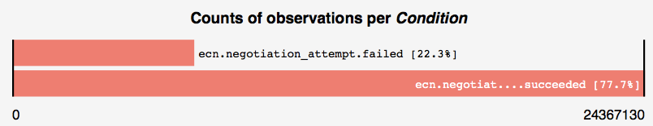
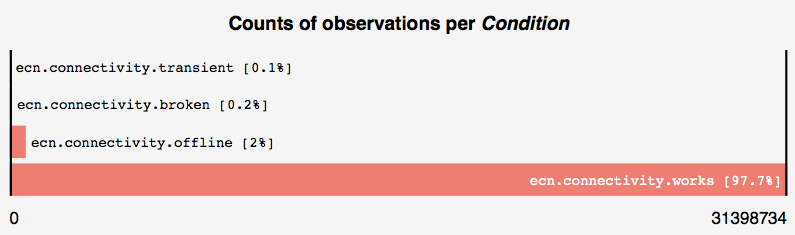
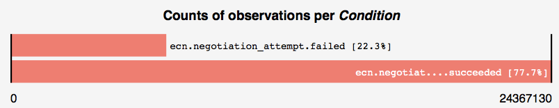
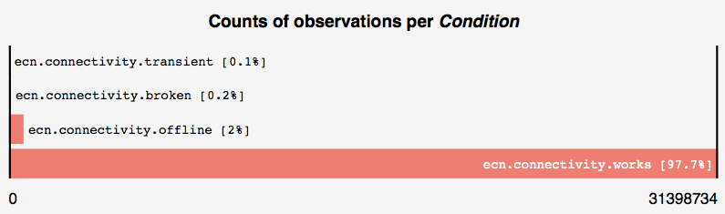

What it is: Path Transparency and Ossification
Given the increasing deployment of middleboxes in the Internet, we see an ossification of the protocol stack that makes it difficult to deploy new protocols or protocol extensions. The data provided by this observatory assists to quantify impairments on path transparency when traffic is altered or treated differently on a network path based on the protocol stack in use.
Path Transparency Observatory
An open-source, public repository for measurement of path transparency and
impairments on new and existing network protocols in the Internet.
How it works: Data and Observations
The Path Transparency Observatory (PTO) collects measurement data from different sources and generated by different measurements tools. An data-format-specific, intermediate processing step generates observations of a network condition c on a path p during a time interval t.
We provide the Path Transparency Observatory-API (PAPI) to run custom queries on observation data base of the PTO.
Use the query web-frontend to get access and graphical rendering of the results!
The Path Transparency Observatory (PTO) collects measurement data from different sources and generated by different measurements tools. An data-format-specific, intermediate processing step generates observations of a network condition c on a path p during a time interval t.
We provide the Path Transparency Observatory-API (PAPI) to run custom queries on observation data base of the PTO.
Use the query web-frontend to get access and graphical rendering of the results!
What is new: Explicit Congestion Notification (ECN)
Currently the PTO only host observation on impairments for Explicit Congestion Notification (ECN), an IP/TCP extension for congestion signaling instead of drop. Despite initial deployment problems blocking ECN usage, we have measurement increasing support of ECN by webservers and Apple announced in April 2016 that iOS and macOS devices will probabilistic attempts to negotiate ECN by default on the client side.
The PTO provides access to our latest measurement data that complements a series of measurement started in 2014. Older data as well as measurement data exposing impairments on other protocols and protocol extension are currently in processing and will be successively added to the PTO over the next couple of month. Stay tuned!
January 2017: Webservers that negotiated ECN successfully

January 2017: Paths with connectivity problems if TCP attempts to negotiate ECN

Currently the PTO only host observation on impairments for Explicit Congestion Notification (ECN), an IP/TCP extension for congestion signaling instead of drop. Despite initial deployment problems blocking ECN usage, we have measurement increasing support of ECN by webservers and Apple announced in April 2016 that iOS and macOS devices will probabilistic attempts to negotiate ECN by default on the client side.
The PTO provides access to our latest measurement data that complements a series of measurement started in 2014. Older data as well as measurement data exposing impairments on other protocols and protocol extension are currently in processing and will be successively added to the PTO over the next couple of month. Stay tuned!
January 2017: Webservers that negotiated ECN successfully

January 2017: Paths with connectivity problems if TCP attempts to negotiate ECN

How to contribute: GitHub and Data
The PTO is open-source available on Github. Most measurement data in the PTO have been collected using PATHspider, an A/B testing of path transparency with integrated upload feature to the PTO. If you are interested in contributing and uploading additional data, or in access to our collected raw data, please contact us directly!
The PTO is open-source available on Github. Most measurement data in the PTO have been collected using PATHspider, an A/B testing of path transparency with integrated upload feature to the PTO. If you are interested in contributing and uploading additional data, or in access to our collected raw data, please contact us directly!
Who we are: The MAMI project
The PTO is developed and maintained by the H2020 ICT MAMI project. You can contact us at pto@something.xy
The PTO is developed and maintained by the H2020 ICT MAMI project. You can contact us at pto@something.xy

This project has received funding from the European Union's Horizon 2020 research and innovation programme under grant agreement No 688421, and was supported by the Swiss State Secretariat for Education, Research and
Innovation (SERI) under contract number 15.0268. The opinions expressed and
arguments employed reflect only the authors' views. The European Commission is
not responsible for any use that may be made of that information. Further, the
opinions expressed and arguments employed herein do not necessarily reflect
the official views of the Swiss Government.